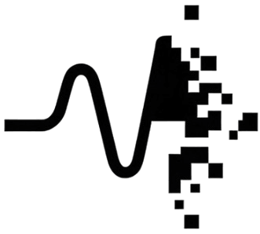

Per-market metrics across all models. Here "Panel" refers to the aggregation of models.
Crosses mark the market's midpoint at snapshot time, the blue lines represent the model probability spreads with 1 line per avg forecast.
Correlation between disagreement with market and overall noise. Note models do not see the market prices explicitly.
Panel-level odds and noise compared to market. Click any heading to sort.